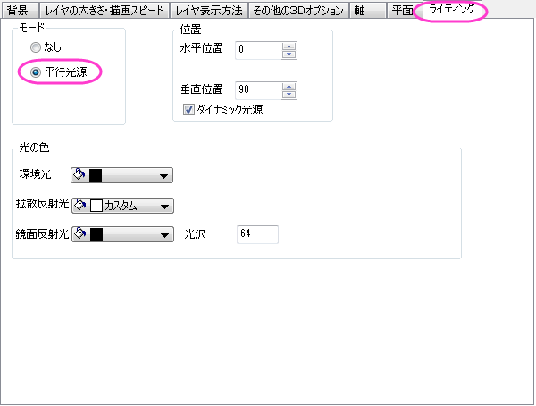
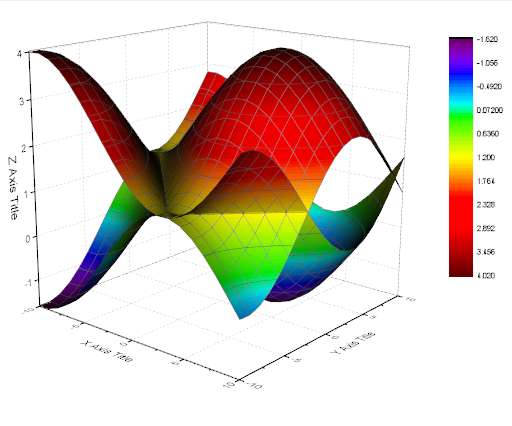
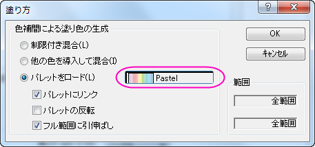
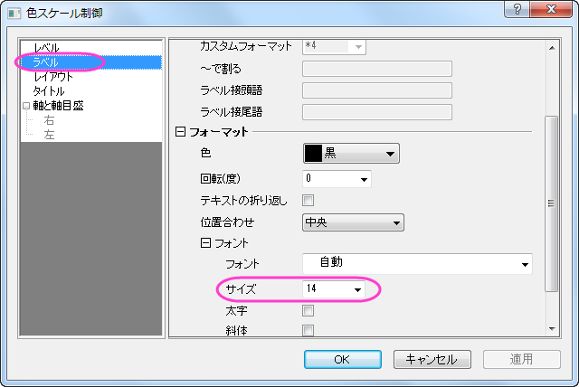
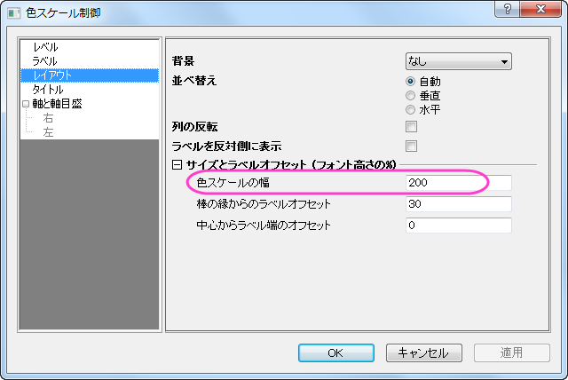
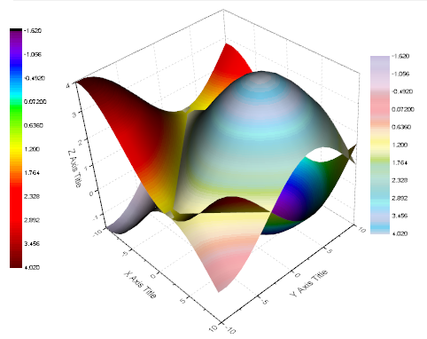

色付き曲面図の交差
3D-Surface-Intersect-Mat
サマリー
Originは複数の交差した色付き曲面図をサポートしています。
必要なOriginのバージョン:Origin 9.0 SR0
学習する項目
このチュートリアルでは、以下の項目について説明します。
- 異なる行列オブジェクトから交差する色つき曲面図を作図する
- カラーマップ曲面図の編集する
- 複合カラーマップ曲面に対して、追加の色スケールを作成する
ステップ
このチュートリアルは、チュートリアルデータプロジェクト<Origin EXE フォルダ>\Samples\TutorialData.opjと関連しています。
- チュートリアルデータプロジェクトを開き、プロジェクトエクスプローラで、ntersecting Surfaces
フォルダを開きます。
- 行列MBook36を選択します。 行列データの上にイメージサムネールが2つあり、それぞれの行列オブジェクトを表示しています。
 |
交差する曲面図を作成する場合、各行列オブジェクトは同じサイズで同じXYマッピングである必要があります。この条件は2つの行列オブジェクトが同じ行列ブック内に組み込まれている時点で自動的に満たされています。
|
- どちらかのサムネール画像を選択します。 メインメニューで作図：3Dと選択してから、複合カラーマップ曲面図を選択します。
これは行列シート内にある全ての行列オブジェクトを使用して、交差する曲面図を作成します。
- グラフをダブルクリックして作図の詳細を開くか、メインメニューからフォーマット：作図の詳細(レイヤ属性)と選択しますライトタブを開き、モードを平行光源に変更して照明効果を付加します。

適用ボタンをクリックすると、次のようなグラフになります。

- 左側パネルでLayer1のブランチを開き、[MBook36]MSheet1!_1(Z)[1*:400*]を選択して作図の詳細（プロット属性）を選択します。
右側パネルのカラーマップ/等高線タブで等高線図を有効にするのチェックを外し、等高線の表示をオフにします。
- 色塗りヘッダをクリックして、塗り方ダイアログボックスを開きます。 デフォルトのRainbowパレットをクリックして、パレットメニューを開きます。
パレットメニューでPastelを選択します。 OKをクリックして軸ダイアログを閉じます。

- 左側のパネルで、[MBook36]MSheet1!_2(Z)[1*:400*] を選択します。等高線図を有効にするのチェックを外します。これまでの変更を確認するために、適用をクリックしましょう。同じ操作を[MBook36]MSheet1!_1(Z)[1*:400*]のプロットでも行います。
- [MBook36]MSheet1!_2(Z)[1*:400*]を選択したまま、メッシュタブを開きます。有効にするのチェックボックスを外して、メッシュ線を非表示にします。同じ操作を[MBook36]MSheet1!_1(Z)[1*:400*]のプロットでも行います。
OK をクリックして作図の詳細ダイアログボックスを閉じて、グラフを更新します。
- 2つ目の曲線のための追加の色スケールを作成します。アクティブにするために、データ：2 [MBook36]MSheet1!_2(Z)[1*:400*]をメニューから選択し、グラフ操作：新規の色スケールと操作します。
- 追加したばかりの色スケールをダブルクリックして色スケール制御ダイアログを開きます。以下の画像のように設定を変更し、ドラッグでレイヤ内の希望の位置に配置します。


- 3Dの回転ボタンを使えば、グラフを回転して上から見た図を表示できます。このボタンは3D表現ツールバーの1つで、グラフレイヤを1回クリックすると開きます。
最終的なグラフはこのようになります。
